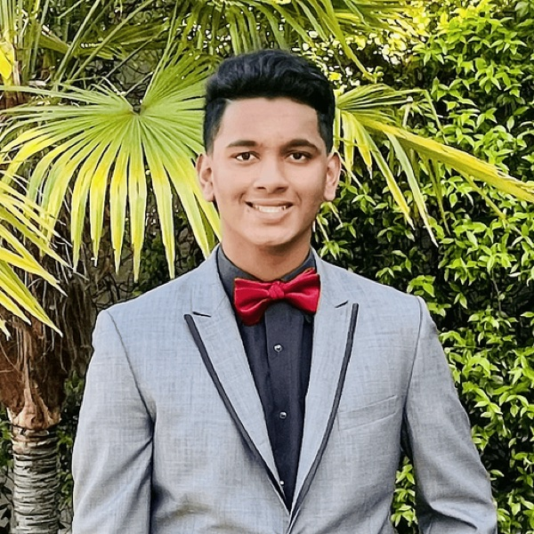
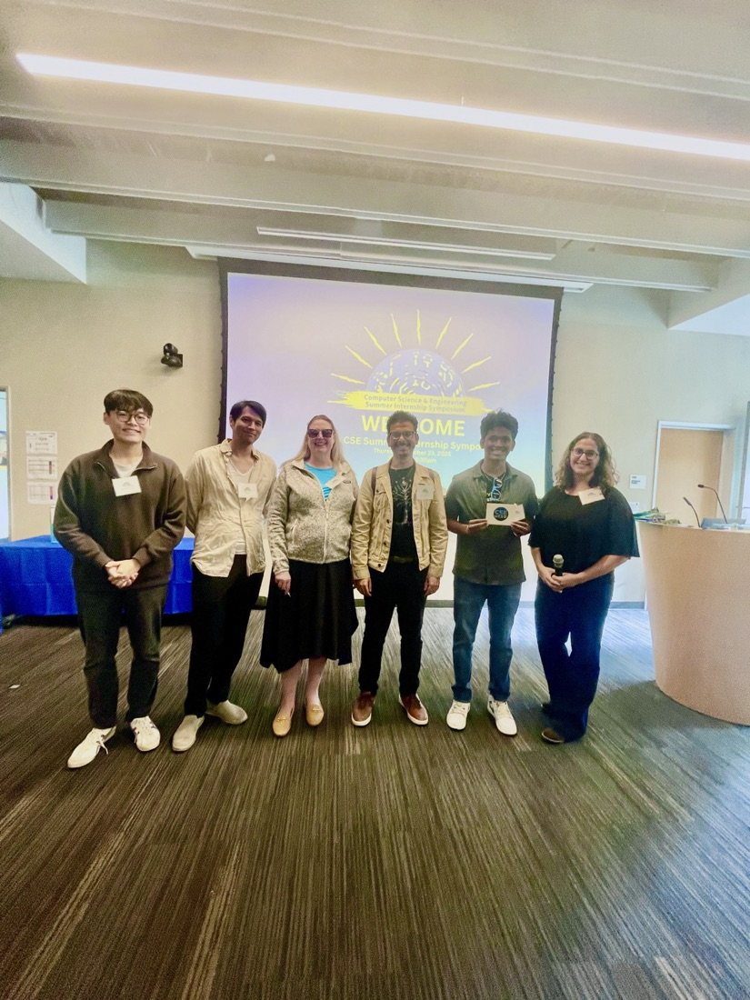
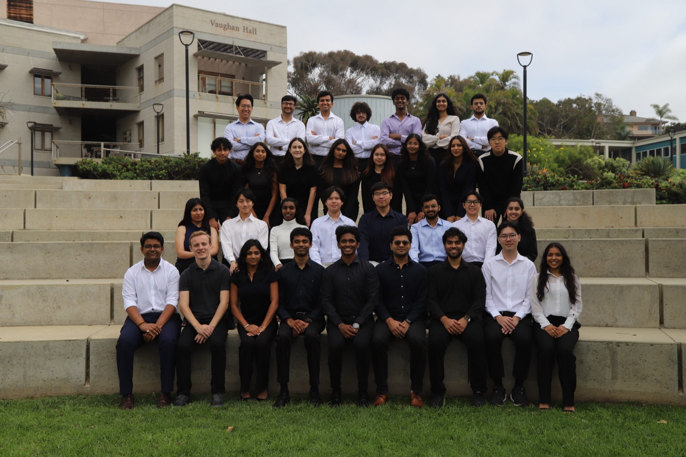
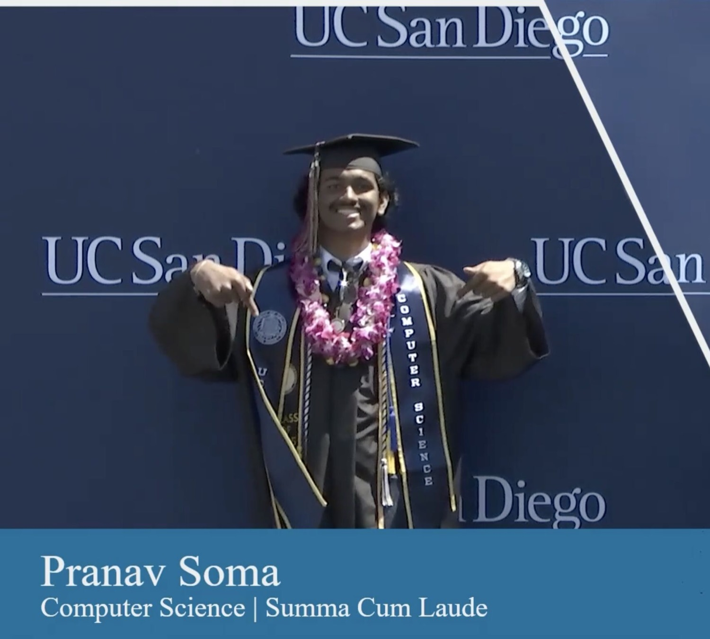
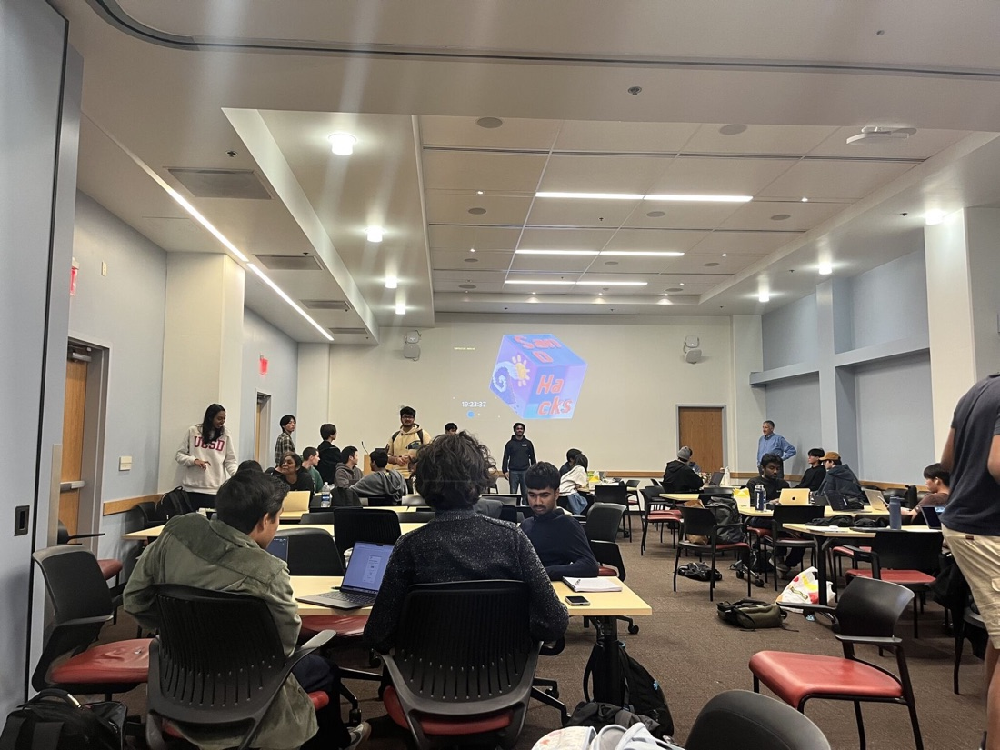
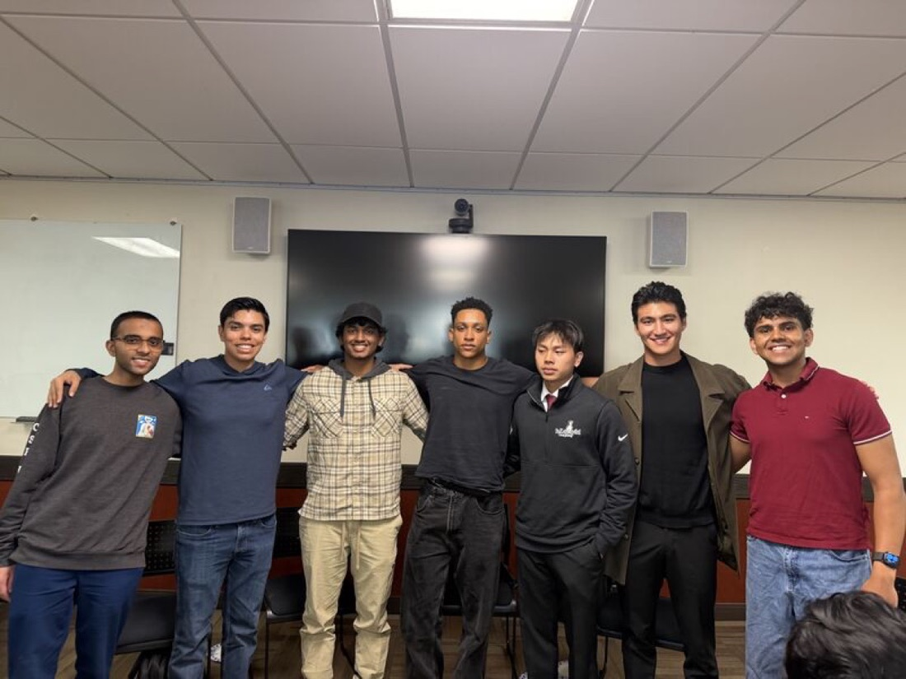
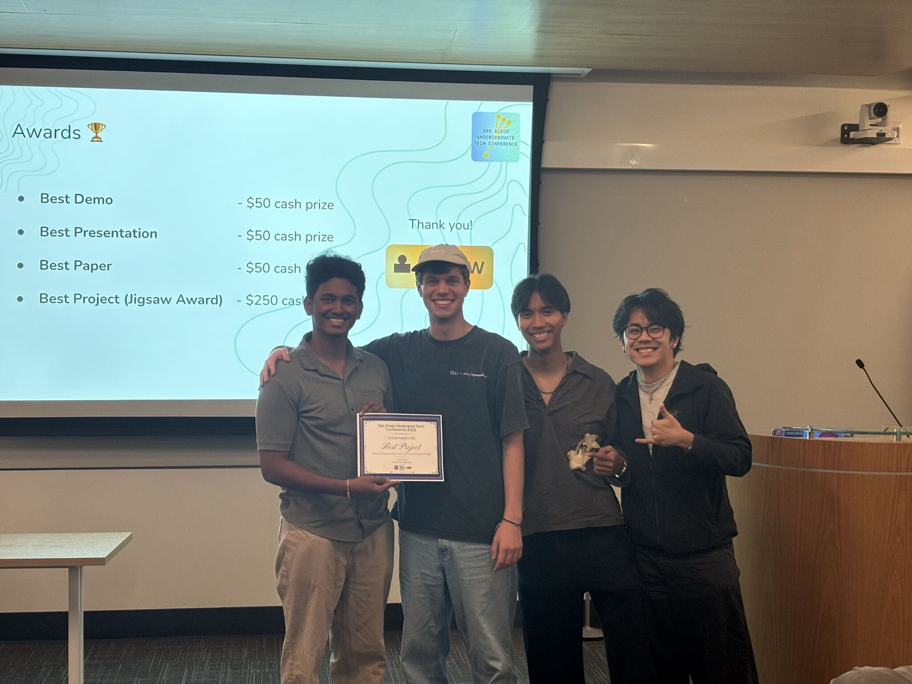
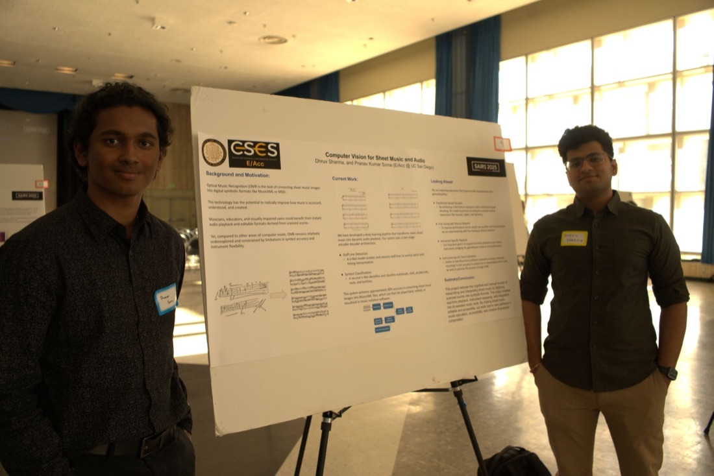
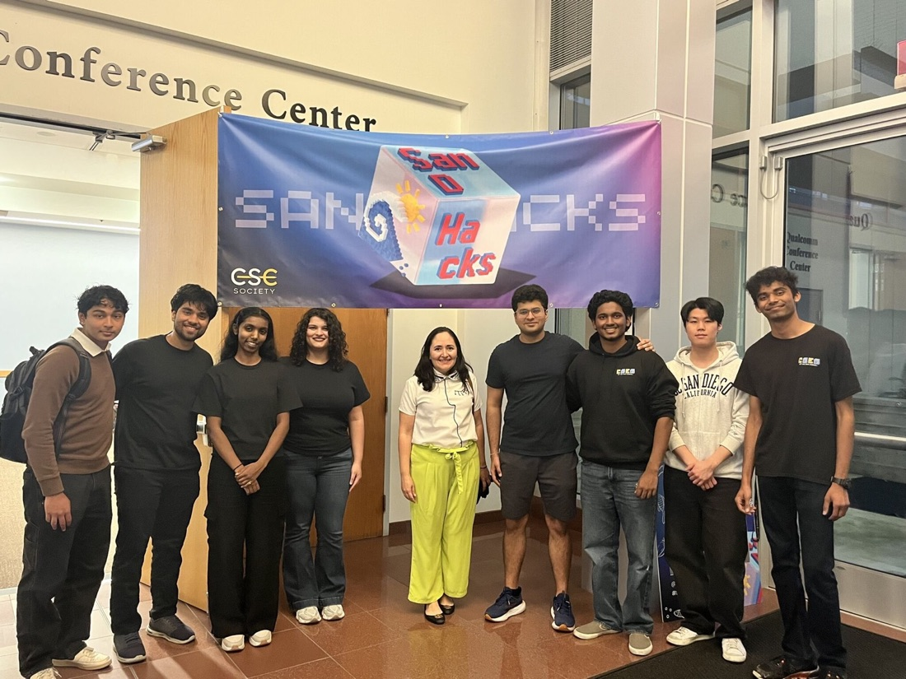

I build AI & ship it.
Finished my CS bachelor's at UCSD in two years, wrapping my master's in just over one (4.00 GPA). I lead an agentic AI platform for 7,000+ people, train multimodal health models on a supercomputer, and shipped voice agents to production at ServiceNow — tested live with customers, and I'm back there this summer.

A demo is a guess. Production is the proof.
Ask me for a link. I'll usually have one.
Four teams, four problems that looked nothing alike. Here's what I shipped at each.
I took the AI Voice Agents platform off a version of AWS Lex that was about to be killed, moved it to the new one ahead of schedule, and got it into production. We tested it live with customers before my internship was even over. I also rebuilt the language-understanding pipeline across 8 intents and cut AI Voice Agent latency by 45%. They gave me a return offer and the Technical Skills Award (top of 800+ interns at UCSD's symposium), and I'm back interning there again this summer.
I lead an agentic AI platform that 7,000+ students, faculty, and staff at UCSD use. That means custom MCP servers over the university's APIs and a workflow engine I built to stay reliable when things go wrong. I also built and shipped an AI tutor that's now running for 8,000 students across UCSD, SDSU, and Cal Poly Pomona. We A/B tested it: TA hours dropped 64% and engagement went up 87%.
I work on LifeSaver, an assistant that reads sensor, audio, and video data and turns it into something a health database can answer, built for emergency services, the elderly, and rural care. I trained multimodal models on the San Diego Supercomputer Center and used GraphRAG over the UMLS medical ontology to keep answers accurate and fast enough for emergencies. I'm first author on the lab's poster.
I led a team of 6 interns. We shipped GenAI Observer, a tool that scores the prompts engineers write and tells them how to make them better, plus an integration connecting ServiceNow and Smartsheet with some LLM categorization. Both got the green light from the PM to go to customers.
Four problems I haven't been able to put down. Each one is interactive below, go ahead and poke at it.
My honors thesis. It draws and scores U.S. congressional maps over Census data, anywhere from 158K to 5.5 million blocks per state. I built three different map generators (a greedy heuristic, a Monte Carlo sampler, and an XGBoost model with graph partitioning) and wrote the fairness metrics that grade them, things like the efficiency gap and Voting Rights Act compliance. It reproduces the real district counts for Alabama, California, and Texas.
I lead the Agentic Systems project at LEI (under Dr. Ramamohan Paturi, Matthew Clegg, and Dr. Elizabeth Lyons): enterprise, workflow-driven agentic AI for 7,000+ UCSD staff, faculty, and students. Custom MCP servers over the university's APIs, research into automated skill-generation and optimization, and a novel workflow executor I built to stay intelligent, deterministic, and graceful when a task goes sideways.
A deployed AI tutor and the platform behind it. To keep it reliable at scale, I built a two-layer evaluation pipeline: one layer monitors tutor outputs live; an LLM panel-of-judges above it composes and stores each student's learning and personality metrics so the teaching adapts. Running for 8,000 students across UCSD, SDSU, and Cal Poly Pomona — 64% fewer TA hours and 87% higher engagement (A/B tested).
An assistant that turns messy real-world signals (sensors, audio, video) into structured answers a clinician or first responder can use. I trained the models on a supercomputer and grounded them with GraphRAG over a medical ontology so the answers are both right and fast enough to matter in an emergency. I also wired up the robotics side that drives the actual hardware.
I'll take the harder problem if it's the one that actually helps someone.
The elderly, an ER, students without enough TAs. I keep ending up there on purpose.
The things I build when nobody's grading them.
ORCA (Orchestration and Recognition for Composition and Arrangement) is an AI music tool that turns sheet music into audio and audio back into a score. OpenCV reads the page, neural nets split the instruments, and a CNN writes the score — 98% accuracy, verified four ways including by real musicians.
A fundraising and advocacy platform I led for a real client. It raised $75K. I ran the team and owned everything from scoping with the client to shipping.
spay.la →AIDE (AI Integrated Developer Environment): an intent-based, zero-touch IDE that turns what you describe into working code.
A two-way marketplace: pros pour their personality and toolset into a hireable agent. Two-way GraphRAG, MCP + A2A.
A tool that checks how sound and honest a piece of biology research is, using retrieval to back up what it flags.
A listing platform for the main housing provider in greater LA. Photo and video upload, form validation, and bulk data exports for their team.
An image classifier for spotting skin lesions, built to run on small on-device hardware.
A 3D fitting room using deep learning and computer vision so you can see how clothes look without trying them on.








I tend to start things. These are the communities I've built and helped run.
I co-founded a 7,000+ student group that spans UCSD's engineering, data science, and business schools. It exists to push AI research, building, and startups across the whole university.
rain.ucsd.edu →I helped start the biggest student-led AI initiative in the country, with people from MIT, Stanford, Caltech, and Cornell. I run the outside relationships: VCs like a16z speedrun and Techstars, and folks from Google and Meta.
I lead UCSD's oldest computing org, 100+ members. We run career fairs, conferences, talks, and a research journal, and we partner with the Linux Foundation and Cisco on open source.
csesucsd.com →I started a research group that brings AI into other fields, working with UCLA, UCSB, and UCSC. I ran 30+ people across ORCA and a couple of other projects.
Next, I want to do this where the models are biggest and the stakes are real.
The hardest version of my problem lives at the cutting edge. Wherever that is, that's where I want to be.
I grew up building robots and somewhere along the way got obsessed with putting AI in front of real people.
I'm from Cupertino, I move fast (undergrad in two years, master's in a year and a quarter), and I run pretty wide: systems, ML, theory, full-stack, robotics. The constant is that I like taking something that only works in a notebook and getting it all the way to someone who needs it, a student short on TAs, an ER, a family in a town with no doctor nearby.
The range isn't an accident. I came up through competitive robotics and debate and a USACO Silver, where you only get credit for the thing that actually works on the day. I'd rather be the person who can carry a problem from the math to the deploy button than stop at either end.
The other half of my time goes into building rooms for people: RAIN, the University AI Alliance, CSE Society. The crowd around a problem ends up mattering as much as the problem. Long term I want to keep doing both, the research and the rooms it happens in.
Targeted résumés: Software, Machine Learning, Forward Deployed
Based in San Diego, open to relocating anywhere in the SF Bay Area.